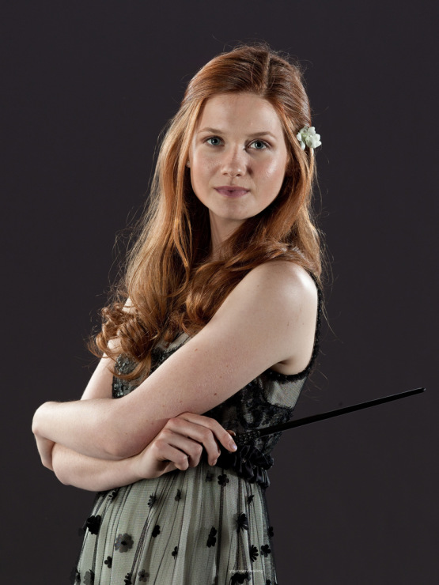

Сайт о Гарри Поттере
Чему нас учат герои?
Уизли
Семья Уизли на своем скромном примере показывает, какой на самом деле должна быть семья - нерушимой, крепкой. Несмотря на некоторые свои недостатки, они плечо к плечу идут к своей цели, защищают и оберегают друг друга. Из этого мы делаем вывод - нет ничего важнее семьи.
Альбус Дамблдор

Для Альбуса Дамблдора также хорошо известно данное высказывание, но к сожалению, жажда власти затмила его разум. Он пытался добиться огромных высот, идя наравне к Грин-де-Вальдом, но смерть его сестры вовремя отвернула его от ошибки. Да, он в какой-то мере виноват в ее смерти и это причинило ему немало боли в свое время. Дамблдора, как никто другой, понимал, что большие знания достигаются болью.
Нимфадора Тонкс
Нимфадора Тонкс, или "просто Тонкс", как она сама просит себя называть является самым молодым мракоборцем, известным нам по страницам романа. Девушка является метаморфом и может менять свой внешний облик. Но к чести девушки, она ценит свою настоящую внешность и не пытается с помощью своих необычных способностей стать краше. К тому же она невероятно добрая девушка, вспомните "Гарри Поттера и Орден Феникса", в котором она меняет свою внешность, чтобы порадовать ребятишек. Мы видим, что она любит себя независимо оттого, как выглядит. И правильно делает!
Фред и Джордж Уизли

Джордж и Фред Уизли скрашивают своим появлением все фильмы. Это одни из самых крутых персонажей! Смешные, дружные - они, как лучики солнца в темноте. Посмотрите сами, несмотря на мрачность, которая витает в "Гарри Поттера и Принце-Полукровке" их появление приносит всем только радость. Они, несмотря на сложную ситуацию находят время для улыбки. Даже когда Джордж теряет ухо, они не перестают обмениваться шутками. Очевидно, их девиз жизни: улыбаться, даже когда мир тёмен.
Невилл Долгопупс
Невилл Долгопупс с самого первого своего появления вызывал у меня сочувствие. Мальчику очень сильно досталось от жизни: его родители не помнят его, в его способности никто не верит, даже учителя смеются над ним (это я про Снейпа). Но в конце первого фильма, когда Невилл пытается сопротивляться своим друзьям, я поняла: этот парень еще утрет всем нос. И действительно! На протяжении всех фильмов мы видим становление Невилла, как личности. Больше всего это проявляется в пятой части. Отряд Дамблдора помог ему поверить в себя, а в конце седьмой книги он и вовсе представлен, как герой, истинный гриффиндорец. На своем скромном опыте он показывает, что усердная работа и решительность способна привести к успеху.
Джинни Уизли

Джинни Уизли - самая младшая в своей семье, к тому же, единственная девочка. В пятой части она предстает перед нами, как довольно-таки сильная волшебница. Вспомните тот же Летучемышиный Сглаз в ее исполнении. Ее выдающиеся способности тут же оценили братья. В этой же книге она заменяет Гарри в квиддиче, что снова шокирует ее братьев. Даже близнецы восхитились ей и зауважали свою младшую сестренку. В седьмой части она является одной из тех, кто встал на защиту Хогвартса и даже дерется с Беллатрикс Лестрейндж. В общем, возраст - не есть залог силы, и на примере Джинни мы можем в этом убедиться.
Перси Уизли

Перси Уизли предстает перед нами в отрицательном ключе в "Гарри Поттере и Ордене Феникса". Он покидает свою семью, ставя в приоритеты карьеру. Он всегда мечтал работать в Министерстве, восхищается Краучем и Фаджем. Но когда перед ним стоит выбор: семья или карьера, он выбирает второе. На протяжении нескольких лет он не контактирует с семьей и лишь в "Дарах Смерти. Часть 2" он разговаривает с Фредом и раскаивается в своих поступках. Посл этого гремит взрыв и Фред погибает, а Перси своими руками расчищает путь, чтобы найти тело брата. Впоследствии он даже кричит действующему Министру Магии - марионетке Волан-де-Морта, что увольняется и посылает в него заклинания. На печальном опыте Перси делаем вывод, что карьера не стоит пожертвований своей семьей.
Гарри Поттер
Сам Гарри учит нас тому, что любовь - это самое важное сокровище.
Гермиона Грейнджер
Гермиона - блестящий ум спасает жизни.
Рон Уизли

Рон - ешь в любой ситуации.
Драко Малфой
Драко - не все злодеи по настоящему злые.
Северус Снейп (Снегг)
Северус - под маской зла может скрываться добро.
наверх